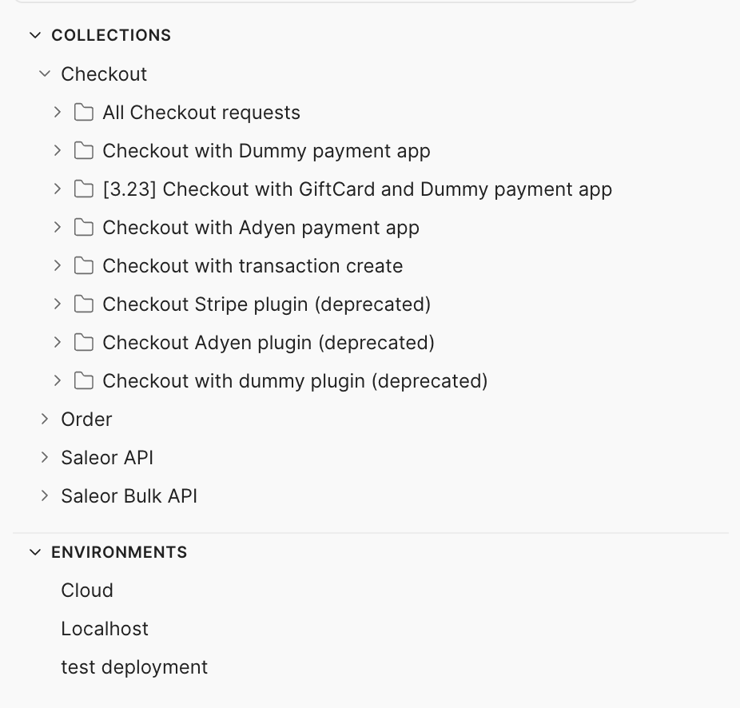
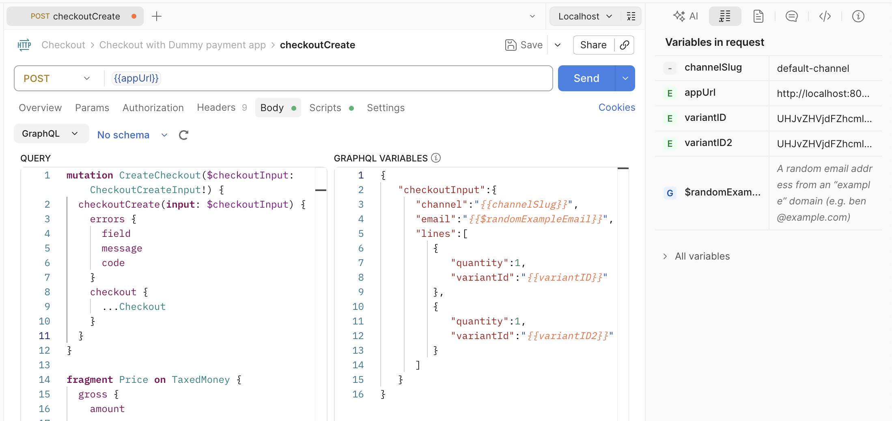
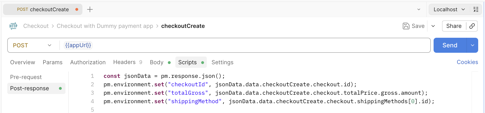
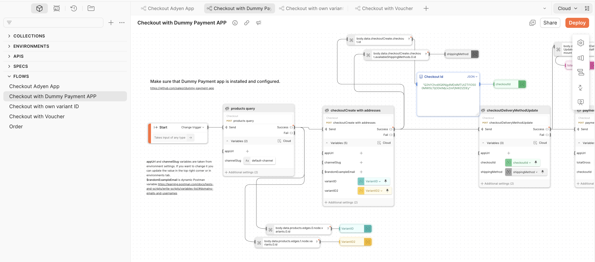

What started as my personal testing shortcut grew into Saleor's official public API collection — now listed on Postman's public directory and used by developers and agencies worldwide to get up and running with the Saleor GraphQL API.
When I joined Saleor, there was no shared request collection. Everyone used their own tool — Postman, Insomnia, GraphQL Playground — and none of them had a shared, versioned collection. Every developer and QA was building requests from scratch, duplicating effort, and there was no single source of truth for how to call the API correctly.
While learning the API — new mutations, new queries — I kept sending the same requests over and over. So I started organizing them: putting related requests in sequence inside folders, each one representing a complete checkout flow.
Pretty quickly I had folders for different scenarios: a common checkout, checkout with a voucher, for digital products, with different payment methods, with different shipping addresses. I could use the Postman Collection Runner to execute an entire folder at once, multiple times, and instantly have orders to work with.

All requests were configured with pre-request and post-request scripts — extracting IDs, chaining tokens between steps, using dynamic variables for email addresses. I created multiple environments so I could effectively switch between staging, production, and local instances with one click.


Next I discovered Postman Flows and created several. It was easier to manipulate and change variables in a single visual view, and run entire sequences with one click.

At this point I showed the collection in a company demo and a few developers started using it right away.
I also created a smoke test suite during functional testing of new mutations. We ran it before releases to make sure all critical paths worked as expected.
Then a colleague shared an idea: Postman has a public directory of API collections where developers can discover ready-to-use examples. Why not publish ours there?
After a cleanup pass and a security review to make sure no passwords or secrets leaked through environment variables, we published it as the official Saleor collection.
The collection isn't something we actively update on a schedule — but it's alive. Sometimes I spot a comment on Discord that the collection is missing a particular mutation, and I add it. It's community-driven maintenance at a low but steady pace.